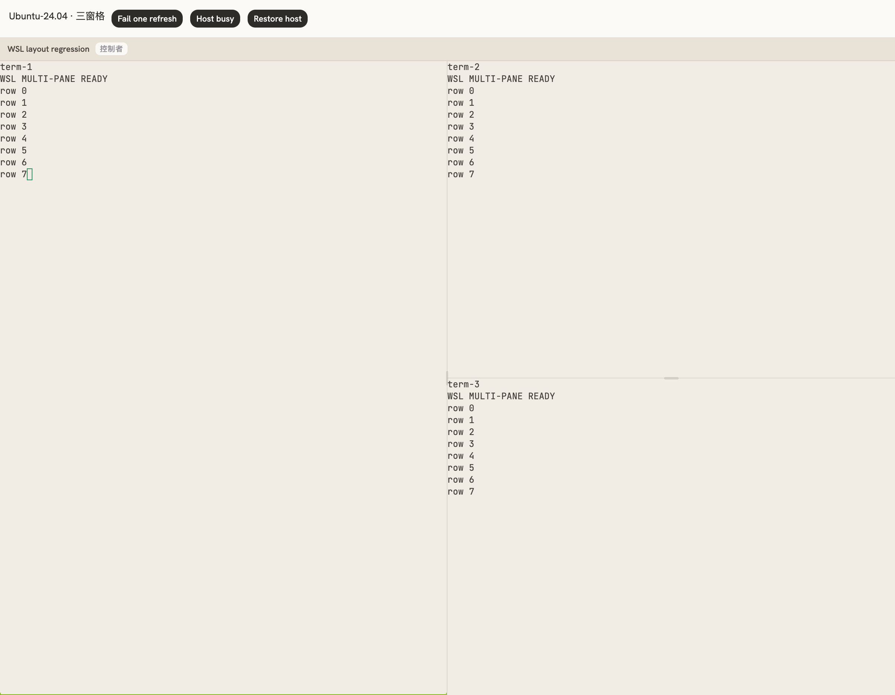
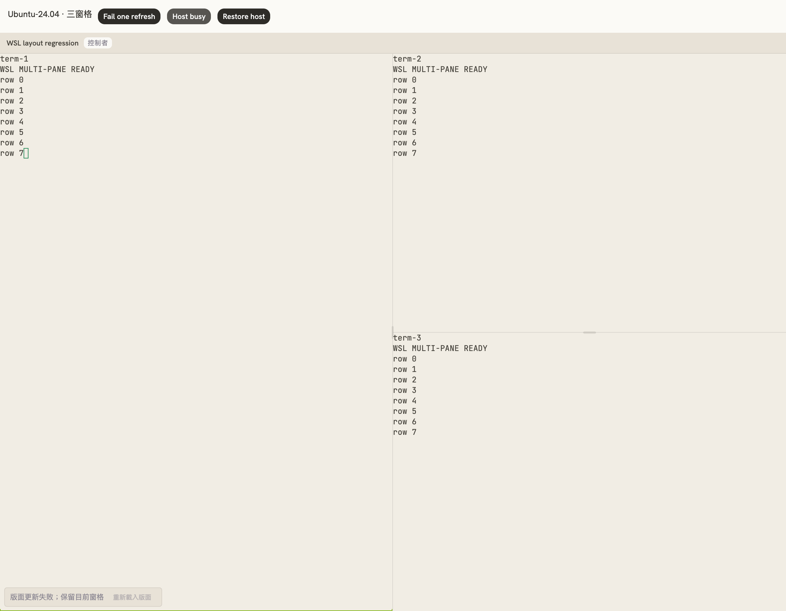

WSL 多窗格退回單一終端：修正與驗證
使用者回報 Windows／WSL 出現「多窗格版面配置無法使用；改以單一終端機顯示」。在相同元件路徑重現兩種原因並加入修正：請求暫時失敗會清掉既有配置且不再重試，以及還原的分頁 ID 過期後仍被優先使用。
原機浮動錯誤內容尚未取得；目前可用 Windows SSH 主機連線逾時。本報告的瀏覽器測試使用真正的 React、xterm、shadcn Resizable 與 WSL provider 路由，但 host_request／host_stream 回應為隔離 fixture。它驗證了這兩條失敗路徑的修正，不代表已在使用者原機確認唯一根因或完成 Windows／WSL 實機驗收。
修正
| 失敗路徑 | 結果 |
|---|---|
| WSL helper 忙碌／請求逾時 | 保留同一版面目標最後一次成功取得的 BSP 配置及 connector。首次載入失敗或更新失敗最多自動重試兩次（400 ms、1000 ms），成功後恢復多窗格並清除錯誤。未取得配置前維持載入狀態；重試用盡才退回單一終端，並提供「重新載入版面」。 |
| 還原的分頁 ID 過期 | 若原分頁仍存在，繼續保持該分頁的歸屬；若已不存在，依頁面所屬主機與 Session 的即時快照重新解析終端目前所在分頁。避免 layout.export 一直查詢失效 tab ID。快照不足時保留原有 metadata 作為後備。 |
| 重試與版面生命週期 | 切換目標時清除舊目標配置；新請求取代舊 generation。頁面關閉會取消重試計時器。重試僅重讀版面，保持後端的 capability／protocol 檢查，不重播輸入或變更版面。 |
驗證
- 修正前兩項失敗：初次失敗不能恢復，以及刷新失敗使三窗格消失。過期 tab ID 測試也先失敗。
- 版面與終端相關 49 項測試通過：包括有限次重試、手動恢復、卸載取消、保留現有分頁與過期 ID 更新。
- 完整前端 192 檔、2,300 項測試通過；typecheck／build 通過；lint 0 errors、51 個既有 warnings。
- 既有 Rust layout 解析／深度限制測試通過；此次沒有修改 Rust 程式，前一輪完整 Rust 驗證維持有效。
- 實際瀏覽器三窗格與拖曳：帶過期儲存 tab ID 的 WSL 頁面第一次請求失敗，第二次取得三窗格；所有要求都送往正確 owner，helper 收到的 Session 名稱為 default，tab 為 w1:t1。初始 60/40 寬度正確，拖曳後根分隔比例約 0.4995，沒有初始化時寫回版面。
- 暫時失敗恢復及連續失敗後手動恢復：全程 3 次 connector open、0 次 release；畫面維持 3 個終端，無需重開 agent。
畫面
WSL provider 路由下的巢狀三窗格，拖曳分隔線後：

連續請求失敗後，保留三窗格並提供重新載入：
